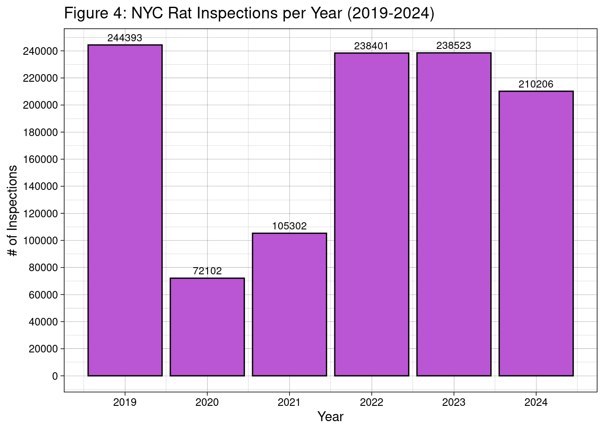

Code
library(tidyverse)
library(dplyr)
library(ggplot2)
library(DT)
library(lubridate)
library(sf)
library(corrplot)Author: Thanh Dao
Last Updated: December 18th, 2024 @2:33PM
This report is looking into what influences the likelihood of rat infestations in different NYC neighborhoods. Specifically, this is through the lens of what the effect of NYC DOH programs have on the rat population in NYC. We can determine that rat sightings do decrease on a yearly basis after the NYC DOH applies bait, and this is most effective in the Bronx.
The overall report can be found here.
Rats are a notorious part of NYC urban life, often associated with the city’s dense infrastructure and vast waste production. They live in sewers, subways, and parks, and have become a public health concern. It would be interesting to see what influences the likelihood of rat infestations in different NYC neighborhoods. Specifically, it would be looked at through the lens of public health programs, where we examine the effect of NYC DOH programs on the rat population. We will be looking at data from 2019 to present day.
The main overall report can be found here.
R PackagesFirst, we will load the necessary R packages that will be used throughout the report.
Second, we will download the necessary data sources. Namely, we will be downloading the following:
These data sources are both government sources, making them very reliable. They are also updated daily; for this report specifically, the latest data is from November 2024.
Additionally, both sources provide the location, time, and other details regarding each rat sighting and inspection. These aspects will be helpful for this report’s spatial analysis and pattern recognition.
However, the rat sightings data specifically is prone to under-reporting and location-based bias, due to it only containing reported sightings. This points to a lack of contextual information; however, the rat inspections data can help supplement.
Another thing to point out would be the effects of the COVID-19 pandemic and quarantining, where people were in lock down and stayed inside. This points to a decrease in sightings and investigations through mid 2020 and throughout 2021. However, we can assume that both were affected equally, and thus it can be assumed there won’t be any major outliers as a result.
The following code will obtain the .shp files to create a map for NYC.
# Get the NYC borough boundaries
if(!file.exists("nyc_borough_boundaries.zip")){
download.file("https://data.cityofnewyork.us/api/geospatial/tqmj-j8zm?method=export&format=Shapefile",
destfile="nyc_borough_boundaries.zip")
}
# Define the function to read .shp file from a zip archive
read_shp_from_zip <- function(zip_file) {
# Create a temporary directory
td <- tempdir();
# Extract the contents of the zip file
zip_contents <- unzip("nyc_borough_boundaries.zip",
exdir = td)
# Identify the .shp file among the extracted contents
fname_shp <- zip_contents[grepl("shp$", zip_contents)]
# Read the shapefile into R using st_read
nyc_sf <- st_read(fname_shp)
return(nyc_sf)
}
nyc_sf <- read_shp_from_zip("nyc_borough_boundaries.zip")Reading layer `geo_export_992fdf87-1fb2-4c6c-b53c-f66dbdaa04a5' from data source `/tmp/Rtmp9dLpot/geo_export_992fdf87-1fb2-4c6c-b53c-f66dbdaa04a5.shp'
using driver `ESRI Shapefile'
Simple feature collection with 5 features and 4 fields
Geometry type: MULTIPOLYGON
Dimension: XY
Bounding box: xmin: -74.25559 ymin: 40.49613 xmax: -73.70001 ymax: 40.91553
Geodetic CRS: WGS84(DD)First, we will remove any columns that are not necessary for our analysis.
rat_sightings <- rat_sightings |>
select(-"Agency Name",
-"Agency",
-"Complaint Type",
-"Descriptor",
-"Location Type",
-"Incident Address",
-"Cross Street 1",
-"Cross Street 2",
-"Intersection Street 1",
-"Intersection Street 2",
-"City",
-"Address Type",
-"Landmark",
-"Facility Type",
-"Status",
-"Due Date",
-"Resolution Action Updated Date",
-"Community Board",
-"X Coordinate (State Plane)",
-"Y Coordinate (State Plane)",
-"Park Facility Name",
-"Park Borough",
-"Vehicle Type",
-"Taxi Company Borough",
-"Taxi Pick Up Location",
-"Bridge Highway Name",
-"Bridge Highway Direction",
-"Road Ramp",
-"Bridge Highway Segment")Second, we will rename some columns for clarity.
Third, we will narrow down the data range, where we will look at data from 2019 to present day.
# Reformat the dates and filter the data
rat_sightings <- rat_sightings |>
# Convert to datetime format
mutate(
CREATED_DATE = mdy_hms(CREATED_DATE),
CLOSED_DATE = mdy_hms(CLOSED_DATE)) |>
# Filter rows for dates from 2019+
filter(
CREATED_DATE >= as.Date("2019-01-01") |
CLOSED_DATE >= as.Date("2019-01-01")) |>
# Reformat to MM/DD/YYYY
mutate(
CREATED_DATE = format(CREATED_DATE, "%m/%d/%Y"),
CLOSED_DATE = format(CLOSED_DATE, "%m/%d/%Y"))First, we will remove any columns that are not necessary for our analysis.
Second, we will fix up the data in some of columns for consistency.
Third, we will narrow down the data range, where we will look at data from 2019 to present day.
# Reformat the dates and filter the data
rat_inspections <- rat_inspections |>
# Convert to datetime format
mutate(
INSPECTION_DATE = mdy_hms(INSPECTION_DATE),
APPROVED_DATE = mdy_hms(APPROVED_DATE)) |>
# Filter rows for dates from 2019+
filter(
INSPECTION_DATE >= as.Date("2019-01-01") |
APPROVED_DATE >= as.Date("2019-01-01")) |>
# Reformat to MM/DD/YYYY
mutate(
INSPECTION_DATE = format(INSPECTION_DATE, "%m/%d/%Y"),
APPROVED_DATE = format(APPROVED_DATE, "%m/%d/%Y"))Fourth, we will create a new column to combine both LATITUDE and LONGITUDE, called LOCATION, which is also found in the rat_sightings data set.
Now that we’ve cleaned up the data, we’re going to do some preliminary explorations.
We’re going to examine how many sightings and inspections were made per borough.
# Sightings per borough
sightings_per_borough <- rat_sightings |>
group_by(BOROUGH) |>
summarize(Sightings = n(), .groups = "drop")
# Inspections per borough
inspections_per_borough <- rat_inspections |>
group_by(BOROUGH) |>
summarize(Inspections = n(), .groups = "drop")
# Put into 1 table
combined_rats <- full_join(sightings_per_borough,
inspections_per_borough,
by = "BOROUGH") |>
arrange(BOROUGH)
# Data table
datatable(setNames(combined_rats,
c("Borough", "Sightings", "Inspections")),
caption = "Table 1: Rat Sightings and Inspections per Borough")We can see that Brooklyn has most rat sightings and inspections, at 51,929 and 396,068, respectively.
These numbers can be a result of a few factors. Firstly, high population density, which leads to more waste production and thus an ample food source for rats. Secondly, aging infrastructure, which offer ideal nesting and breeding grounds for rats. Thirdly, as mentioned before, reporting bias.
On the other hand, Staten Island has the least, with 4,130 and 15,798, respectively.
These numbers can be a result of a few factors. Firstly, lower population density. Secondly, there’s more green space, which doesn’t support large rat populations like urban zones do. Thirdly, there are proactive community efforts for cleanliness and rodent control in public spaces.
The following choropleth maps will display similar results to what was found in the previous table.
The following code will create a choropleth map using the rat_sightings data.
# Ensure column names match
nyc_sf <- nyc_sf |>
rename(BOROUGH = boro_name)
nyc_sf <- nyc_sf |>
mutate(BOROUGH = toupper(BOROUGH))
# Join spatial data with previously made sightings / inspection data
nyc_sf_rats <- nyc_sf |>
left_join(combined_rats, by = "BOROUGH")
# Create map with fill based on sightings
ggplot(nyc_sf_rats,
aes(geometry = geometry, fill = Sightings)) +
geom_sf() +
scale_fill_gradient(low = "#E3CEF6",
high = "#4B0082",
na.value = "gray") +
theme_minimal() +
labs(title = "Figure 1: Rat Sightings per Borough in NYC (2019-2024)",
fill = "Sightings",)We can see that Brooklyn has the most sightings, and Staten Island has the least; however, this can also be connected to the population sizes.
Now, we’re going to create a choropleth map using the rat_inspections data.
Similarly to rat sightings, we can see that Brooklyn has the most inspections, and Staten Island has the least.
We will now examine the change in numbers across the five years; thus, the following calculations will be made.
The following code will display the difference in rat sightings across the five years in both a table and through a bar chart.
# Ensure CREATED_DATE is in date format
rat_sightings <- rat_sightings |>
mutate(CREATED_DATE = as.Date(CREATED_DATE,
format = "%m/%d/%Y"))
# Group by year, filter for 2019 onward, and summarize inspections
sightings_per_year <- rat_sightings |>
mutate(Year = year(CREATED_DATE)) |> # Extract year
filter(Year >= 2019) |>
group_by(Year) |>
summarize(Sightings = n(),
.groups = "drop") |>
arrange(Year)
# Show the difference in sightings between years
sightings_per_year <- sightings_per_year |>
mutate(Difference = Sightings - lag(Sightings,
order_by = Year))
# Display as a data table
datatable(sightings_per_year,
caption = "Table 2: Number of Rat Sightings per Year",
options = list(pageLength = 10, autoWidth = TRUE))# Display as a graph
ggplot(sightings_per_year,
aes(x = Year,
y = Sightings)) +
geom_bar(stat = "identity", fill = "#BA55D3", color = "black") +
labs(title = "Figure 3: NYC Rat Sightings per Year (2019-2024)",
x = "Year",
y = "# of Sightings") +
scale_x_continuous(breaks = seq(min(sightings_per_year$Year),
max(sightings_per_year$Year),
by = 1)) +
scale_y_continuous(breaks = seq(0, max(sightings_per_year$Sightings),
by = 5000)) +
geom_text(aes(label = Sightings),
vjust = -0.5,
color = "black",
size = 3) +
theme_linedraw()The following code will display the difference in rat inspections across the five years in both a table and through a bar chart.
# Ensure INSPECTION_DATE is in date format
rat_inspections <- rat_inspections |>
mutate(INSPECTION_DATE = as.Date(INSPECTION_DATE,
format = "%m/%d/%Y"))
# Group by year, filter for 2019 onward, and summarize inspections
inspections_per_year <- rat_inspections |>
mutate(Year = year(INSPECTION_DATE)) |>
filter(Year >= 2019, Year <= 2024) |>
group_by(Year) |>
summarize(Inspections = n(),
.groups = "drop") |>
arrange(Year)
# Show the difference in inspections between years
inspections_per_year <- inspections_per_year |>
mutate(Difference = Inspections - lag(Inspections, order_by = Year))
# Display as a data table
datatable(inspections_per_year,
caption = "Table 3: Number of Rat Inspections per Year",
options = list(pageLength = 10, autoWidth = TRUE))# Display as a graph
ggplot(inspections_per_year,
aes(x = Year, y = Inspections)) +
geom_bar(stat = "identity",
fill = "#BA55D3",
color = "black") +
labs(title = "Figure 4: NYC Rat Inspections per Year (2019-2024)",
x = "Year",
y = "# of Inspections") +
scale_x_continuous(breaks = seq(min(inspections_per_year$Year),
max(inspections_per_year$Year),
by = 1)) +
scale_y_continuous(breaks = seq(0,
max(inspections_per_year$Inspections),
by = 20000)) +
geom_text(aes(label = Inspections),
vjust = -0.5, color = "black", size = 3) +
theme_linedraw()
Before we look into the DOH’s effect on rat sightings, we need to see what actions are being taken.
There are 3 types of inspections: initial, compliance, and bait. Initial refers to the first inspection. If a property were to fail this initial inspection, the DOH will conduct a compliance inspection, which is followed by baiting. This refers to the application of rodenticide or a monitored visit by a Health Department Pest Control Professional.
In this data, we can see that not all 770,669 initial inspections and 180,225 compliance inspections resulted in the need for action, with there only being 161,334 cases of baiting. For this report’s purposes, we will focus on the baiting cases.
The following code will focus on the bait inspections per year.
# Filter and summarize the data for "BAIT"
bait_per_year <- rat_inspections |>
filter(INSPECTION_TYPE == "BAIT") |>
mutate(Year = year(INSPECTION_DATE)) |>
filter(Year >= 2019, Year <= 2024) |>
group_by(Year) |>
summarize(Count = n(),
.groups = "drop") |>
arrange(Year)
# Create a data table
datatable(bait_per_year,
options = list(pageLength = 10, autoWidth = TRUE),
caption = "Table 5: Bait Inspections (2019-2024)")# Create a bar graph
ggplot(bait_per_year, aes(x = Year,
y = Count,
fill = as.factor(Year))) +
geom_bar(stat = "identity",
fill = "#BA55D3",
color = "black") +
labs(title = "Figure 5: Bait Inspections (2019-2024)",
x = "Year",
y = "Count") +
scale_x_continuous(breaks = seq(min(bait_per_year$Year),
max(bait_per_year$Year), by = 1)) +
scale_y_continuous(breaks = seq(0, max(bait_per_year$Count),
by = 5000)) +
geom_text(aes(label = Count),
vjust = -0.5,
color = "black",
size = 3) +
theme_linedraw()Across all the inspections thus far, we can see a large drop in 2020 and 2021; this can be attributed to the COVID-19 pandemic, as mentioned earlier. However, actions were still made against the rat population, and thus they will still be considered.
We will now compare the sightings data to the bait data; specifically, we will examine the number of sightings per borough before and after the bait was applied through the lens of time.
Before we do a “cause-and-effect” application of bait, We will create a correlation map as is.
# Merge datasets on "Year"
merged_data <- merge(sightings_per_year,
bait_per_year,
by = "Year")
# Select the relevant columns for correlation
corr_data <- merged_data[, c("Sightings", "Count")]
# Compute correlation matrix
correlation_matrix <- cor(corr_data, use = "complete.obs")
# Generate the correlation plot
suppressWarnings(corrplot(
correlation_matrix,
method = "circle",
type = "full",
col = colorRampPalette(c("plum", "white", "purple"))(200),
addCoef.col = "black",
number.cex = 0.7,
tl.col = "black",
tl.cex = 0.8,
cl.cex = 0.8,
title = "Figure 6: Correlation between Sightings and Bait Count",
mar = c(0, 0, 2, 0)))Based on the correlation coefficient of 0.34, there is some degree of positive association, albeit somewhat weak, between the rat sightings and bait count. As rat sightings increased, bait count also increased, but the relationship isn’t very strong or consistent.
We’ll also create a bar chart that combines Figures 3 and 5, to give a better perspective.
# Add a new column for the variable type
sightings <- sightings_per_year |>
mutate(Type = "Sightings", Value = Sightings)
bait <- bait_per_year |>
mutate(Type = "Bait Count", Value = Count)
# Combine the datasets
combined_data <- bind_rows(sightings[, c("Year", "Type", "Value")],
bait[, c("Year", "Type", "Value")])
# Create combined bar chart
ggplot(combined_data, aes(x = as.factor(Year),
y = Value,
fill = Type)) +
geom_bar(stat = "identity", position = "dodge", color = "black") +
labs(
title = "Figure 7: NYC Rat Sightings and Bait Inspections (2019-2024)",
x = "Year",
y = "Count",
fill = "Type") +
scale_fill_manual(values = c("Sightings" = "#BA55D3",
"Bait Count" = "#6495ED")) +
scale_y_continuous(breaks = seq(0, max(combined_data$Value),
by = 5000)) +
geom_text(
aes(label = Value),
position = position_dodge(width = 0.9),
vjust = -0.5,
size = 3) +
theme_linedraw()Overall, there appears to be a positive relationship between bait inspections and rat sightings. However, the intensity of bait inspections doesn’t always lead to a proportional change in sightings. For instance, 2024 had higher bait inspections than 2021 but lower sightings. This agrees with the correlation coefficient of 0.34 determined earlier.
We will now examine this through a “cause-and-effect” lens, where we examine the correlation between bait inspections from one year and rat sightings in the following year.
# Lag sightings data by 1 year
sightings_lagged <- sightings_per_year |>
mutate(Year = Year - 1) |>
rename(Lagged_Sightings = Sightings)
# Merge with bait_per_year on Year
yearly_cause_effect <- bait_per_year |>
inner_join(sightings_lagged, by = "Year")
# Create a correlation matrix for Bait Count and Lagged Sightings
yearly_cause_effect_corr <- yearly_cause_effect[, c("Count", "Lagged_Sightings")]
# Compute correlation matrix
yearly_correlation_matrix <- cor(yearly_cause_effect_corr,
use = "complete.obs")
# Generate correlation plot
suppressWarnings(correlation_plot <- corrplot(
yearly_correlation_matrix,
method = "circle",
type = "full",
col = colorRampPalette(c("plum", "white", "purple"))(200),
addCoef.col = "black",
number.cex = 0.7,
tl.col = "black",
tl.cex = 0.8,
cl.cex = 0.8,
title = "Figure 8: Correlation of Bait Inspections and Next-Year Sightings",
mar = c(0, 0, 2, 0)))Based on the correlation coefficient of -0.53, we can determine that, in general, as the number of bait inspections increases in one year, the number of rat sightings tends to decrease in the following year, but with moderate strength. This means that higher bait inspections could have a somewhat beneficial impact on reducing sightings, and the relationship is moderately strong.
This also goes against what was previously determined with the overall correlation.
We will also look into this on a monthly basis.
# Extract MONTH from rat_sightings and place in new column
rat_sightings$MONTH <- month(ymd(rat_sightings$CREATED_DATE))
# Do sightings per month
sightings_per_month <- rat_sightings[, c("CREATED_DATE", "MONTH")]
sightings_per_month <- sightings_per_month |>
mutate(YEAR = format(as.Date(CREATED_DATE), "%Y")) |> # Extract year
filter(YEAR >= 2019 & YEAR <= 2024) |> # Filter data from 2019 to 2024
group_by(YEAR, MONTH) |> # Group by year and month
summarise(NUM_SIGHTINGS = n(),
.groups = "drop") # # of sightings per group
# Extract MONTH from rat_inspections and place in new column
rat_inspections$MONTH <- month(ymd(rat_inspections$INSPECTION_DATE))
# Do bait per month
bait_per_month <- rat_inspections[, c("INSPECTION_TYPE", "INSPECTION_DATE", "MONTH")]
bait_per_month <- bait_per_month[bait_per_month$INSPECTION_TYPE == "BAIT", ]
bait_per_month <- bait_per_month |>
mutate(YEAR = format(as.Date(INSPECTION_DATE), "%Y")) |> # Extract year
filter(YEAR >= 2019 & YEAR <= 2024) |> # Filter data from 2019 to 2024
group_by(YEAR, MONTH) |> # Group by year and month
summarise(NUM_BAITS = n(),
.groups = "drop") # # of bait inspections per group
# Lag sightings data by 1 month
sightings_lagged_month <- sightings_per_month |>
mutate(Month = as.integer(MONTH) + 1) |>
rename(Lagged_Sightings = NUM_SIGHTINGS)
# Ensure the "Month" rolls over correctly (From December to January)
sightings_lagged_month$Month[sightings_lagged_month$Month == 13] <- 1
# Merge with bait_per_month on YEAR and MONTH
monthly_cause_effect <- bait_per_month |>
inner_join(sightings_lagged_month, by = c("YEAR", "MONTH"))
# Create a correlation matrix for Bait Count and Lagged Sightings
monthly_cause_effect_corr <- monthly_cause_effect[, c("NUM_BAITS", "Lagged_Sightings")]
# Compute correlation matrix
monthly_correlation_matrix <- cor(monthly_cause_effect_corr,
use = "complete.obs")
# Generate correlation plot
suppressWarnings(correlation_plot <- corrplot(
monthly_correlation_matrix,
method = "circle",
type = "full",
col = colorRampPalette(c("plum", "white", "purple"))(200),
addCoef.col = "black",
number.cex = 0.7,
tl.col = "black",
tl.cex = 0.8,
cl.cex = 0.8,
title = "Figure 9: Correlation of Monthly Bait Inspections and Next-Month Sightings",
mar = c(0, 0, 2, 0)))Based on the correlation coefficient of 0.21, we can determine that, in general, as the number of bait inspections increases in one month, the number of rat sightings tends to increase in the following year, but with very weak strength. There is almost no correlation. This means that on a monthly basis, bait inspections have no effect on rat sightings. It can be assumed that examining this from a monthly lens is too short of a time frame to see effective results.
After examining from a time lens, we’ll examine per borough per year.
# Group by BOROUGH and YEAR and calculate the count of sightings
sightings_per_borough_per_year <- rat_sightings |>
mutate(YEAR = as.numeric(format(as.Date(CREATED_DATE, "%Y-%m-%d"),
"%Y"))) |> # Extract year
filter(YEAR >= 2019 & YEAR <= 2024) |>
group_by(YEAR, BOROUGH) |> # Group by year and borough
summarize(SIGHTINGS = n(), .groups = 'drop') # Count sightings
# Combine with bait_per_year
report_borough_year <- sightings_per_borough_per_year %>%
left_join(bait_per_year,
by = c("YEAR" = "Year")) |> # Join on the 'YEAR' column
rename(Bait = Count) First we’ll look at the Bronx.
# Filter sightings data for BRONX and lag it by 1 year
sightings_lagged_bronx <- sightings_per_borough_per_year |>
filter(BOROUGH == "BRONX") |> # Focus on BRONX
mutate(YEAR = YEAR - 1) |> # Lag the year by 1
rename(Lagged_Sightings = SIGHTINGS)
# Merge lagged sightings with bait data on YEAR
yearly_cause_effect_bronx <- bait_per_year |>
rename(Bait = Count) |> # Rename Count to Bait
inner_join(sightings_lagged_bronx, by = c("Year" = "YEAR"))
# Create a correlation matrix for Bait and Lagged Sightings
yearly_cause_effect_corr_bronx <- yearly_cause_effect_bronx[, c("Bait", "Lagged_Sightings")]
# Compute correlation matrix
yearly_correlation_matrix_bronx <- cor(yearly_cause_effect_corr_bronx,
use = "complete.obs")
# Generate correlation plot
suppressWarnings(correlation_plot_bronx <- corrplot(
yearly_correlation_matrix_bronx,
method = "circle",
type = "full",
col = colorRampPalette(c("plum", "white", "purple"))(200),
addCoef.col = "black",
number.cex = 0.7,
tl.col = "black",
tl.cex = 0.8,
cl.cex = 0.8,
title = "Figure 10: Correlation of Bait and Next-Year Sightings (Bronx)",
mar = c(0, 0, 2, 0)))Based on the correlation coefficient of -0.84, we can determine that there is a strong correlation between the number of bait inspections increasing in one year and the number of rat sightings decreasing the following year in the Bronx.
This means that in the Bronx, higher bait inspections has a beneficial impact on reducing sightings on a yearly basis.
Second, we’ll look at Brooklyn.
# Filter sightings data for BROOKLYN and lag it by 1 year
sightings_lagged_brooklyn <- sightings_per_borough_per_year |>
filter(BOROUGH == "BROOKLYN") |>
mutate(YEAR = YEAR - 1) |>
rename(Lagged_Sightings = SIGHTINGS)
# Merge lagged sightings with bait data on YEAR
yearly_cause_effect_brooklyn <- bait_per_year |>
rename(Bait = Count) |>
inner_join(sightings_lagged_brooklyn, by = c("Year" = "YEAR"))
# Create a correlation matrix for Bait and Lagged Sightings
yearly_cause_effect_corr_brooklyn <- yearly_cause_effect_brooklyn[, c("Bait", "Lagged_Sightings")]
# Compute correlation matrix
yearly_correlation_matrix_brooklyn <- cor(yearly_cause_effect_corr_brooklyn,
use = "complete.obs")
# Generate correlation plot
suppressWarnings(correlation_plot_brooklyn <- corrplot(
yearly_correlation_matrix_brooklyn,
method = "circle",
type = "full",
col = colorRampPalette(c("plum", "white", "purple"))(200),
addCoef.col = "black",
number.cex = 0.7,
tl.col = "black",
tl.cex = 0.8,
cl.cex = 0.8,
title = "Figure 11: Correlation of Bait and Next-Year Sightings (Brooklyn)",
mar = c(0, 0, 2, 0)
))Based on the correlation coefficient of -0.39, we can determine that there is a weak correlation between the number of bait inspections increasing in one year and the number of rat sightings decreasing the following year in Brooklyn.
This means that in Brooklyn, higher bait inspections has a somewhat weak, beneficial impact on reducing sightings on a yearly basis.
Third, we’ll look at Manhattan.
# Filter sightings data for MANHATTAN and lag it by 1 year
sightings_lagged_manhattan <- sightings_per_borough_per_year |>
filter(BOROUGH == "MANHATTAN") |>
mutate(YEAR = YEAR - 1) |>
rename(Lagged_Sightings = SIGHTINGS)
# Merge lagged sightings with bait data on YEAR
yearly_cause_effect_manhattan <- bait_per_year |>
rename(Bait = Count) |>
inner_join(sightings_lagged_manhattan, by = c("Year" = "YEAR"))
# Create a correlation matrix for Bait and Lagged Sightings
yearly_cause_effect_corr_manhattan <- yearly_cause_effect_manhattan[, c("Bait", "Lagged_Sightings")]
# Compute correlation matrix
yearly_correlation_matrix_manhattan <- cor(yearly_cause_effect_corr_manhattan,
use = "complete.obs")
# Generate correlation plot
suppressWarnings(correlation_plot_manhattan <- corrplot(
yearly_correlation_matrix_manhattan,
method = "circle",
type = "full",
col = colorRampPalette(c("plum", "white", "purple"))(200),
addCoef.col = "black",
number.cex = 0.7,
tl.col = "black",
tl.cex = 0.8,
cl.cex = 0.8,
title = "Figure 12: Correlation of Bait and Next-Year Sightings (Manhattan)",
mar = c(0, 0, 2, 0)
))Based on the correlation coefficient of -0.78, we can determine that there is a strong correlation between the number of bait inspections increasing in one year and the number of rat sightings decreasing the following year in Manhattan.
This means that in Manhattan, higher bait inspections has a beneficial impact on reducing sightings on a yearly basis.
Next, we’ll look at Queens.
# Filter sightings data for QUEENS and lag it by 1 year
sightings_lagged_queens <- sightings_per_borough_per_year |>
filter(BOROUGH == "QUEENS") |>
mutate(YEAR = YEAR - 1) |>
rename(Lagged_Sightings = SIGHTINGS)
# Merge lagged sightings with bait data on YEAR
yearly_cause_effect_queens <- bait_per_year |>
rename(Bait = Count) |>
inner_join(sightings_lagged_queens, by = c("Year" = "YEAR"))
# Create a correlation matrix for Bait and Lagged Sightings
yearly_cause_effect_corr_queens <- yearly_cause_effect_queens[,
c("Bait", "Lagged_Sightings")]
# Compute correlation matrix
yearly_correlation_matrix_queens <- cor(yearly_cause_effect_corr_queens,
use = "complete.obs")
# Generate correlation plot
suppressWarnings(correlation_plot_queens <- corrplot(
yearly_correlation_matrix_queens,
method = "circle",
type = "full",
col = colorRampPalette(c("plum", "white", "purple"))(200),
addCoef.col = "black",
number.cex = 0.7,
tl.col = "black",
tl.cex = 0.8,
cl.cex = 0.8,
title = "Figure 13: Correlation of Bait and Next-Year Sightings (Queens)",
mar = c(0, 0, 2, 0)
))Based on the correlation coefficient of 0.13, we can determine that, in general in Queens, as the number of bait inspections increases in one year, the number of rat sightings tends to increase in the following year, but with very weak strength. There is almost no correlation.
This means that in Queens, on a yearly basis, bait inspections have no effect on rat sightings.
Finally, we’ll look at Staten Island.
# Filter sightings data for STATEN ISLAND and lag it by 1 year
sightings_lagged_staten_island <- sightings_per_borough_per_year |>
filter(BOROUGH == "STATEN ISLAND") |>
mutate(YEAR = YEAR - 1) |>
rename(Lagged_Sightings = SIGHTINGS)
# Merge lagged sightings with bait data on YEAR
yearly_cause_effect_staten_island <- bait_per_year |>
rename(Bait = Count) |>
inner_join(sightings_lagged_staten_island, by = c("Year" = "YEAR"))
# Create a correlation matrix for Bait and Lagged Sightings
yearly_cause_effect_corr_staten_island <- yearly_cause_effect_staten_island[, c("Bait", "Lagged_Sightings")]
# Compute correlation matrix
yearly_correlation_matrix_staten_island <- cor(yearly_cause_effect_corr_staten_island,
use = "complete.obs")
# Generate correlation plot
suppressWarnings(correlation_plot_staten_island <- corrplot(
yearly_correlation_matrix_staten_island,
method = "circle",
type = "full",
col = colorRampPalette(c("plum", "white", "purple"))(200),
addCoef.col = "black",
number.cex = 0.7,
tl.col = "black",
tl.cex = 0.8,
cl.cex = 0.8,
title = "Figure 14: Correlation of Bait and Next-Year Sightings (Staten Island)",
mar = c(0, 0, 2, 0)
))Based on the correlation coefficient of -0.76, we can determine that there is a strong correlation between the number of bait inspections increasing in one year and the number of rat sightings decreasing the following year in Staten Island.
This means that in Staten Island, higher bait inspections has a beneficial impact on reducing sightings on a yearly basis.
After all of these analyses, it can be concluded that the NYC DOH program of placing rat bait across the city is effective on a yearly basis, with the programs being effective in decreasing the number of rat sightings, as seen by a correlation of -0.53 and in Figure 8.
The bait is most effective in the Bronx, and least effective in Queens, as seen by the correlations of -0.84 and 0.13, respectively.
In future works, it would be interesting to examine the effect of seasons on rat sightings, and see if that is correlated to rat inspections. Other methods of determining correlation outside of the “cause-and-effect” lens would also be beneficial, to further back up the findings and potentially uncover new ones.